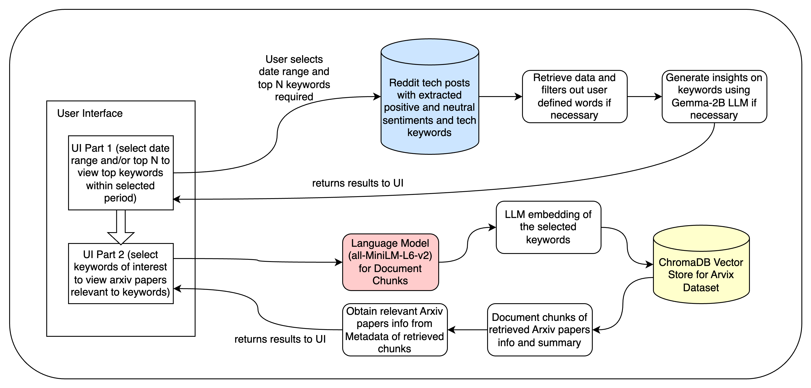
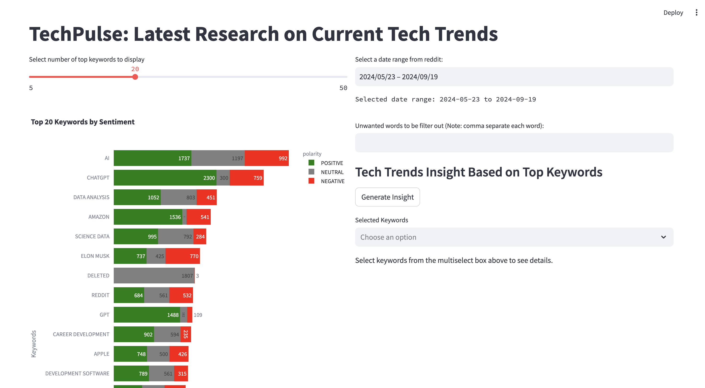
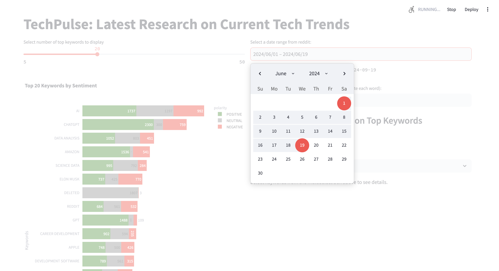
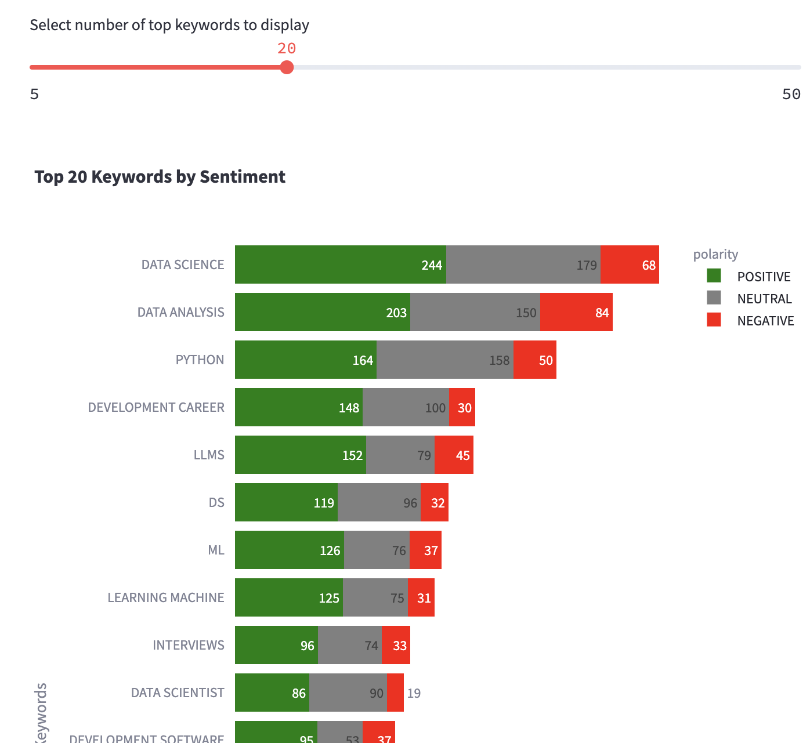
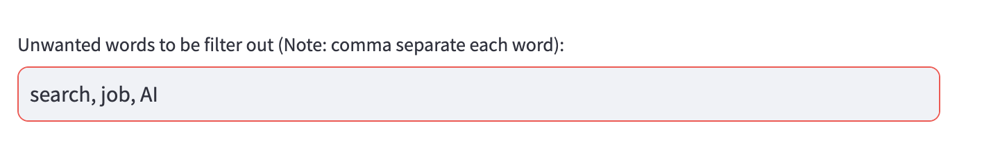
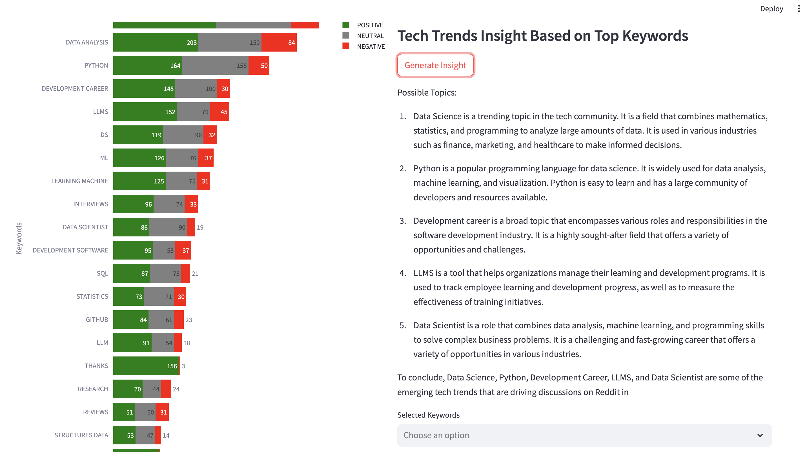
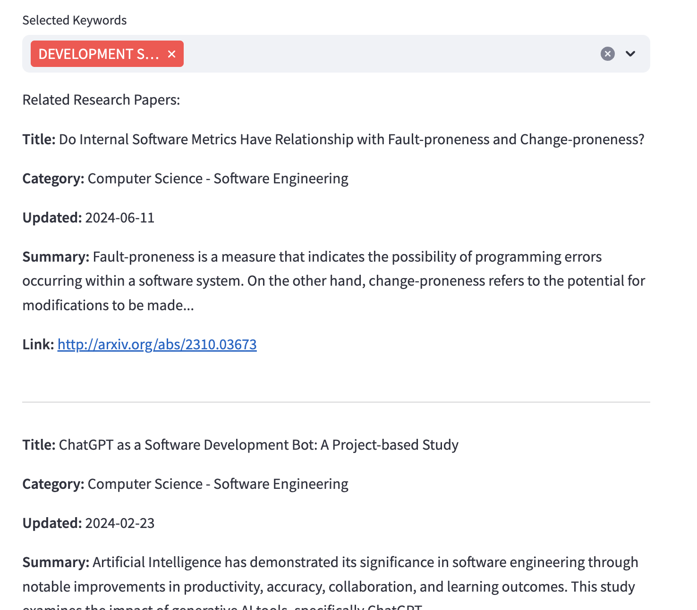

TechPulse User Interface¶
Introduction¶
The TechPulse App is an application that allows users to analyze Reddit tech posts and find related arXiv research papers. This document provides a guide on how to use the application effectively.
User Interface Data Flowchart Overview¶
{kind=link}

Configuration Instructions¶
Before using the application, you need to configure it to ensure it can access the updated Reddit keyword files. Follow these steps:
Locate the Hydra Configuration File: - Find the Hydra configuration file, named config.yaml in the conf directory of the project.
Update the Reddit Results File Path: - Open the configuration file and locate the reddit_results_file_for_ui entry. This entry specifies the path where the application expects to find the updated Reddit keyword files. - Ensure that this path points to the correct location where you will place the updated files.
Place the Updated Reddit Keyword Files: - Download or prepare the updated Reddit keyword files that you want to use with the application. - Place these files in the directory specified by the cfg.reddit_results_file_for_ui path in the Hydra configuration file.
Verify the Configuration: - Double-check that the path is correct and that the files are accessible. You can do this by navigating to the specified directory in your terminal or file explorer.
Example:
reddit_results_file_for_ui: /Users/tayjohnny/Documents/My_MTECH/PLP/plp_practice_proj/reddit_keywords_results/reddit_keywords_hybrid.csv
Usage¶
To launch the application, run the following command in your terminal:
streamlit run src/streamlit_poc_with_gemma.py
Once the application is running, you will see the Streamlit UI in your web browser that looks like this:
Note: If this is your first time using the application and the RAG vector database and the Gemma-2b model have not been downloaded locally, please be aware that it may take approximately 4 to 5 hours to prepare these data and model before the UI can be used. Subsequent usage will mot require this wait once the vector store has been built and Gemma-2B is downloaded locally.
Note on Downloading the Gemma-2B Model¶
If you encounter a gated repository error while trying to access the Gemma-2B model on Hugging Face, follow these steps:
Request Access: - Go to the model’s page on Hugging Face: google/gemma-2b. - Look for an option to request access. This may involve filling out a form or providing information about your intended use of the model.
Wait for Approval: - After submitting your request, wait for the Hugging Face team or the model’s maintainers to approve your access. This can take some time.
Authenticate: - Once granted access, authenticate in your environment by running:
huggingface-cli login
Enter your Hugging Face token when prompted. You can find your token in your Hugging Face account settings.
Download the Model: - After authentication, you should be able to download and access the model without encountering the gated repo error.
Check Your Code: - Ensure that your code is correctly set up to load the model after you have access.
Main UI Display¶

The main features include:
1. Date Range Selection:¶
Choose a date range to filter Reddit posts. By default, the maximum range will be selected.

2. Top Keywords Display:¶
View the top keywords based on reddit post dates and sentiment analysis. You can select the number of top keywords to be displayed within the range of 5 to 50. You can also select the relevant sentiments by clicking on the ‘POSITIVE’, ‘NEUTRAL’ and ‘NEGATIVE’ sentiment to select or unselect them.

3. Keyword Filtering:¶
If there are specific unwanted words that you prefer not to be included, input these unwanted words to filter out from the analysis.

4. Tech Trends Insight:¶
Generate insights based on the selected keywords. This is generated by the Google/Gemma-2b model. The model can be replaced by a more performant model as required.

5. Research Paper Details:¶
View related top 10 research papers for selected keywords. The list is sorted with the latest updated papers on top.

Conclusion¶
This application serves as a useful tool for users to analyze tech trends and finding relevant research materials. For any issues or contributions, please refer to the project’s repository.